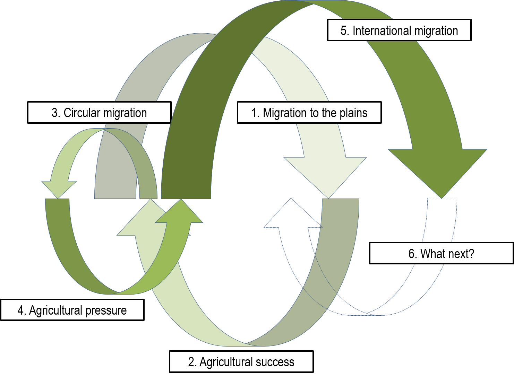
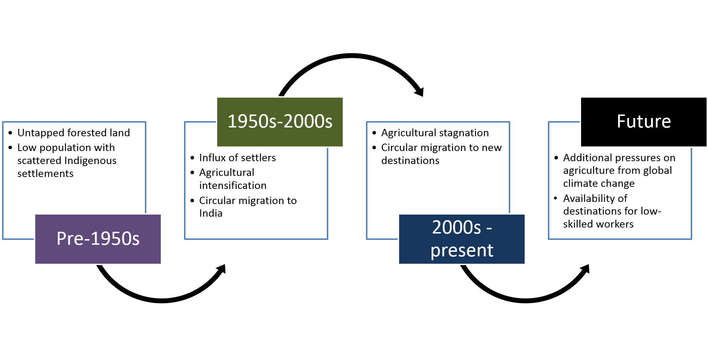

Climate, Agriculture and Migration: A Critical Review of Dynamic Livelihood Changes in the Nepali Tarai
Work-in-Progress Seminar (WiPS)
Hugo Centre for Migration and Population Research
18 May 2017
Asheshwor Shrestha
asheshworman.shrestha@adelaide.edu.au,
PhD Candidate,
Geography, Environment & Population,
The University of Adelaide
Outline
- Background on the study sites
- State of agriculture in the Tarai
- Human mobilities in the Tarai - past and present
- Emerging threats from global environmental change in the Tarai
- How environmental changes and human mobility interact in the Tarai
- Summary of findings
Objectives
- Explore how agricultural risks translate into human mobilities
- Households' handling of risks through in-situ and ex-situ livelihoods
- Non-linear relationship between agricultural risks and human mobilitity
Conceptualising human mobility and environmental change as key drivers of livelihood change

Conceptualising human mobility and environmental change as key drivers of livelihood change
Conceptualising human mobility and environmental change as key drivers of livelihood change
1. Background
- Features of the Tarai belt
- Introduction to the study sites-Damak and Dhangadhi municipalities
Study locations
Study sites
Dhangadhi, Far-west Nepal
Damak, East Nepal
Study sites
- Rural characteristics despite being classified as municipalities
- History of environmental transformations - forest turned into fields in the 1960s
- Rapid population growth in the Tarai from 35.2% of Nepal’s population in 1952/53 to 50.3% in 2011 (Kansakar 2003; CBS 2012)
- Underdevelopment and social inequalities
2. State of agriculture
- Features of Tarai agriculture
- Trends in production
State of agriculture
- More than 53% of land holdings in Nepal consisted of land with areas less than 0.5 ha (CBS 2013)
- Traditional agricultural practices with little modernisation
- The relative contribution to national GDP from the agriculture sector declined from 68% in 1971 to 37% in 2011
Trends in Nepal's rice import and export
Data source: FAO (2016)
Farm and off-farm livelihoods
- Circular migration has been a supplementary livelihood strategy from the early settlement days
- More than 80% of households practiced agriculture but at the same time, half of them had at least one migrant member (Field Survey)
3. Mobilities past and present
- Historical in-migration to the Tarai
- Historical out-migration from the Tarai
- Contemporary out-migration trend
- Human capital of migrants
- Remittance by destination region
Mobilities
- In-migration to the Tarai after eradication of malaria in the 1960s
- State-led program to resettle victims of natural hazards, followed by many moving on their own
- Supplementary income from working in neighbouring India due to similarity in culture, language and physical appearance
- 6.8% of absentee population in 2011 compared to just 3.2% in 2001 (Kansakar 2003; CBS 2012)
Migration to India declining
Data source: UN 2015
Trends in work permits for top destination regions
Data source: DoFE 2014
Prior residence of non-indigenous households (n=201)
Data source: Field survey
Contemporary destinations of migrant members (n=217)
Data source: Field survey
Migrants' human capital
Formal education of migrants by destination region. Data source: Field survey
Remittances by destination
Data source: Field survey; GDP value from World Bank (2014)
4. Emerging threats
- Environmental change
- Rainfall has become less reliant
- Increased pressure to look for off-farm livelihoods
Environmental change
- Around 80-85% of yearly rainfall is experienced in monsoon months (June to September)
- Monsoon rainfall vital for paddy
- Dry fields needed for wheat growth during winter
- Consecutive dry days have increased at all stations, and consecutive wet days have decreased
- The usual normal amount of growing season rainfall is being experienced in fewer days
Rainfall becoming less reliable
Rainfall has become erratic. It does not rain when required. (Respondent 208)
Rainfall pattern has changed. We are forced to rely on underground water for agriculture. We are at a disadvantage because we don't own water pumps. (Respondent 231)
In the past days, the winter rain in the month of Magh (December-January) used to be good for agriculture. It used to always rain on Shreepanchami day (the fifth day of spring). (Respondent 113)
Rainfall becoming less reliable
Trends in irrigation sources. Data source: CBS 2013
Off-farm livelihoods
- Rising cost of agricultural inputs
It is very difficult to get loan as a farmer. Even as a owner of a property, the amount of loan accessible from banks is limited as they evaluate the property very conservatively making the property worth less than half the market value. (Person 8)
Irrigation from pumped water is expensive. The cost of electricity is NPR 8 (UDS 0.08) per unit (kwh). (Respondent 215)
5. How environmental changes, livelihoods and human mobility interact in the Tarai
- Pressures in agriculture indirectly influence transnational mobilities
- Unique pattern of mobility have emerged as migrants are poor farmers
- Future movement likely to continue
- Policy directions
Summary of findings
- Collectively, the Tarai migrants constitute the mass movement of people for labour that has become the necessity of the modern world. In this process, the farming households unwittingly become part of a transnational society.
- The cases illustrate the complex non-linear relationships that drive mobilities and how individuals with low human capital have become essential transnational actors in a globalized world.
- Increased reliance on off-farm livelihoods impacting labour availability for agriculture as traditional agricultural practices such as labour sharing and in kind payment are being replaced by commercial practices.
Summary of findings
- The popularity of international destinations suggests that environmental factors can influence human mobilities beyond the national/regional boundaries. Farmers are able to access the established international networks and any pressure due to environmental changes simply reinforces the migration pathways.
- Since the use of remittances for basic household activities and the fact that remittance income is disproportionately larger than income made at home, the trend in foreign employment is expected to continue but will likely be impacted by demands at destinations.
Summary of findings
- Migrants with high human capital (education) increasingly accessing new international destinations; similar findings by Findlay (2011), and Massey et al. (1993).
- Existing inequalities are likely to be preserved as the poorest farmers still accessing regional destinations in India with lower remittance income.
- From policy perspective, adaptation should focus on in-situ opportunities for households unable to access such mobilities to mitigate household risks.
Discussion
Questions / comments
Slides: asheshwor.github.io/agrifood
Slides for printing: asheshwor.github.io/agrifood/?print-pdf
Press key for references, acknowledgements and attributions
References
- Central Bureau of Statistics (CBS) 2013, National Sample Census of Agriculture: Nepal 2011/12, National Report, Central Bureau of Statistics, Government of Nepal, National Planning Commission Secretariat, Kathmandu, Nepal.
- Food and Agriculture Organization of the United Nations (FAO), 2016, Crops and livestock products http://www.fao.org/faostat/en/#data/TP/metadata
- Findlay, AM 2011, 'Migrant destinations in an era of environmental change', Global Environmental Change, vol. 2011.
- Kansakar, V. B. S. (1985). Land resettlement policy as a population distribution strategy in Nepal. In L. A. Kosinski & K. M. Elahi (Eds.), Population redistribution and development in South Asia. Dordrecht, Holland: D. Reidel Publisihing Company.
- Kansakar, V. B. S. 2003, 'International Migration and Citizenship in Nepal', in Population Monograph Volume 1, vol. 1, pp. 85-119.
- Massey, DS, Arango, J, Hugo, G, Kouaouci, A, Pellegrino, A & Taylor, JE 1993, 'Theories of International Migration: A Review and Appraisal', Population Council, vol. 19, no. 3, pp. 431-466.
- UN 2015, 'International migration flows to and from selected countries: The 2015 revision', in UN (ed.) 2015 revision edn, http://www.un.org/en/development/desa/population/migration/data/empirical2/migrationflows.shtml
- World Bank 2014, World Bank development indicators, URL: http://data.worldbank.org/indicator/NY.GDP.PCAP.CD/countries accessed 3-08-2014
Acknowledgements
- Principal supervisor: Dr. Douglas Bardsley, co-supervisors: Dr. Dianne Rudd and the late Prof. Graeme Hugo
- Field-work funding from Department of Geography, Environment & Population, The University of Adelaide
- Field research assistants Shreekrishna Chaudhary and Sujan Ranjitkar
- Local contact persons - Umesh Dhimal, Tejpal Dhimal, Laxmi Niraula and Kanchan Ojha
- Special thanks to Damak Municipality, Dhangadhi Municipality, Mercycorps Nepal, ADF Nepal Pvt. Ltd., and Neeraj Dangol
Attributions
- Slide framework: Reveal.js
- Fonts: Google fonts and Font Awesome
- Study location map data for Damak and Dhangadhi: Department of Survey, Kathmandu, Nepal
- Study location map: CARTO
- Interactive Highchart graphs: highcharter R package version 0.4.0
- All photographs from author's field-work